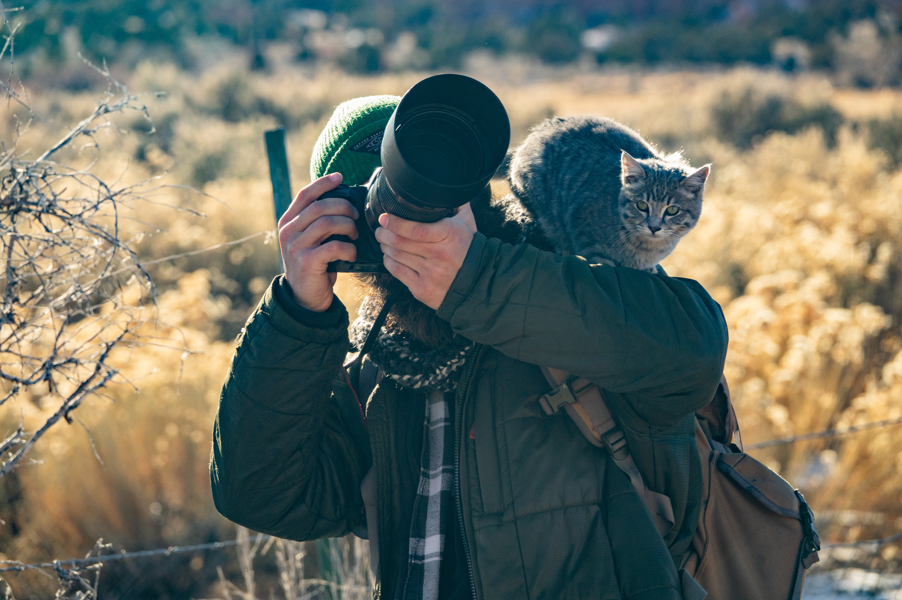

What to Know About St. George, Utah
St. George in October features mild temperatures and fewer crowds. It's an excellent time to explore outdoor attractions and enjoy local dining options.
Local customs: Tipping 15-20% at restaurants is customary. Be respectful of local customs and community events.
Best times of day: Morning and late afternoon are ideal for outdoor activities due to cooler temperatures.
Transportation quirks: Public transportation options are limited. A rental car is recommended for ease of getting around.
Safety: Stay hydrated while hiking and be aware of your surroundings in the desert environment.
Crowd patterns: Expect fewer tourists than in summer, making it easier to access popular sites.
Local etiquette: Be polite and friendly; locals appreciate courteous behavior, especially in dining settings.


🧥 What to Expect
Typical October temperatures are around 77°F daytime and 55°F overnight. Fall colors emerge in the red rock landscape, with leaves turning gold against the sandstone. Crowds are lighter than summer, making it easier to explore. No permits are required for the attractions, and trails are generally accessible.
Current Weather🚗 Getting Here
Open in Google Maps →Take I-15 S to UT-9 E, which leads into St. George. Enjoy views of the Virgin River and surrounding hills during the drive. Parking is available at all major attractions.
🏔️ Top Attractions
⏰ Possible Daily Schedule
🎭 Cultural Events
St. George has a relaxed cultural scene in October. Visitors can explore local art galleries and enjoy the warm weather in parks. The area is known for its outdoor activities and community gatherings, with a few local venues hosting live music and events throughout the month.
🍽️ Dinner Recommendations
Zion National Park
October 18, 2026
NPS / Ally O'Rullian
What to Know About Zion National Park
Zion National Park in October offers a comfortable climate and beautiful fall colors, making it an ideal time for hiking and exploring. Be prepared for variable weather and plan your hikes around potential crowd patterns.
Local customs: Respect wildlife and keep a safe distance. Follow Leave No Trace principles to preserve the environment.
Best times of day: Early morning is best for popular trails to avoid crowds. Late afternoon provides great lighting for photography.
Transportation quirks: The park has a shuttle system that operates during peak season. In October, private vehicles are typically allowed in the canyon.
Safety: Stay hydrated and wear appropriate footwear while hiking. Be cautious of slippery rocks in The Narrows.
Crowd patterns: Expect fewer visitors than in summer, particularly on weekday mornings. Weekends can still be busy.
Local etiquette: Yield to hikers going uphill and maintain a quiet atmosphere in natural areas.

🧥 What to Expect
Typical October temperatures are around 62°F daytime and 38°F overnight. Fall foliage transforms Zion into a palette of warm colors with contrasting red rock formations. The park is less crowded than summer, offering a more intimate experience.
Current Weather🚗 Getting Here
Open in Google Maps →Take I-15 N and then UT-9 E into Zion National Park. The drive features desert landscapes and a final approach through the canyon. Arrive early to secure parking at the visitor center.
🏔️ Top Attractions
⏰ Possible Daily Schedule
🎭 Cultural Events
Zion National Park is a remote destination with limited cultural events in October. The park offers ongoing interpretive programs, including ranger-led talks and evening programs at the amphitheater. The nearest gateway town, Springdale, has a few local venues that may host live music or art events, but specific October events are not confirmed.
🍽️ Dinner Recommendations
Bryce Canyon National Park
October 19–21, 2026
USFWS Mountain-Prairie
What to Know About Bryce Canyon National Park
Expect cooler temperatures and fewer crowds in October at Bryce Canyon National Park. Reservations for lodging and dining are recommended due to limited availability.
Local customs: Respect the natural environment; stay on designated trails and pack out all trash.
Best times of day: Early mornings and late afternoons provide the best lighting for photography and fewer crowds.
Transportation quirks: Public transportation is limited; a personal vehicle is the best way to explore the park.
Safety: Stay hydrated and be aware of altitude changes while hiking. Always check the weather before setting out.
Crowd patterns: October sees a decrease in visitors compared to summer months, making for a more peaceful experience.
Local etiquette: Maintain a respectful distance from wildlife and do not feed animals.



🧥 What to Expect
Typical October temperatures are around 60°F daytime and 40°F overnight. Fall colors begin to emerge in the park, with the aspen trees turning golden against the red rock formations. Crowds are lower than summer, allowing for a more peaceful experience. The park is open, but some trails may be muddy after rains — check conditions before heading out.
Current Weather🚗 Getting Here
Open in Google Maps →Take US-89 N from Zion, then connect to UT-12 E for a scenic route through the Red Canyon. The drive features rock formations and colorful landscapes before arriving at Bryce Canyon. Parking is available at the park entrance.
🏔️ Top Attractions
⏰ Possible Daily Schedule
🎭 Cultural Events
Bryce Canyon National Park is a remote destination with a focus on natural beauty rather than cultural events. In October, visitors can enjoy the park's interpretive programs, including ranger-led talks and evening programs at the amphitheater. The nearest gateway town, Panguitch, offers a quiet atmosphere with occasional community gatherings and local dining options.
🍽️ Dinner Recommendations
Capitol Reef National Park
October 21–22, 2026
NPS/Hannah Taylor
What to Know About Capitol Reef National Park
Capitol Reef National Park in October is a great time to explore with cooler temperatures and fall colors. Prepare for potential temperature drops in the evening.
Local customs: Respect the natural environment and follow Leave No Trace principles. Be mindful of wildlife and their habitats.
Best times of day: Early morning offers the best light for photography and cooler temperatures for hiking. Late afternoon can provide beautiful shadows and colors on the rock formations.
Transportation quirks: Parking can be limited at popular trailheads; arrive early to secure a spot. Cell service may be spotty, so download maps ahead of time.
Safety: Stay hydrated while hiking and watch for changing weather conditions. Bring sun protection and be aware of your surroundings.
Crowd patterns: Expect fewer visitors in October compared to peak summer months. Weekdays are typically quieter than weekends.
Local etiquette: Maintain a respectful distance from wildlife and do not feed animals. Stay on marked trails to protect the environment.

🧥 What to Expect
Typical October temperatures are around 61°F daytime and 41°F overnight. Fall colors begin to appear against the red rock landscape. Crowds are lighter than summer, providing a more peaceful experience.
Current Weather🚗 Getting Here
Open in Google Maps →Travel on US-89 S and UT-24 E through scenic landscapes. The road provides views of red rock formations and distant mountains. Arrive at the park entrance for easy access to trails and viewpoints.
🏔️ Top Attractions
⏰ Possible Daily Schedule
🎭 Cultural Events
Capitol Reef National Park is a remote destination with a focus on natural beauty and outdoor activities. While there are no specific ticketed cultural events during your visit, the park offers interpretive programs such as ranger-led talks and evening programs at the amphitheater. The nearest gateway town, Torrey, has a few local venues that may host live music or events, but these are not guaranteed.
Local tip: Check out the Capitol Reef Field Station for any ongoing programs or talks during your visit. It's a good place to learn more about the park's ecology and history.
🍽️ Dinner Recommendations
What to Know About Moab
Moab in late October offers pleasant weather for outdoor activities, with cooler evenings. Expect a mix of locals and travelers, especially near popular attractions.
Local customs: Respect the local environment and follow Leave No Trace principles.
Best times of day: Mornings and evenings are ideal for hiking, with cooler temperatures and softer light.
Transportation quirks: Renting a vehicle is recommended for flexibility in exploring the parks. Gas stations may be limited outside of town.
Safety: Stay hydrated and bring enough water for hikes, as temperatures can vary significantly.
Crowd patterns: Weekends are busier, especially at national parks; plan visits during weekdays for fewer crowds.
Local etiquette: Greet locals with a friendly nod or smile. Be respectful of wildlife and maintain a safe distance.


🧥 What to Expect
Typical October temperatures are around 70°F daytime and 46°F overnight. Fall colors contrast against the red rock landscape, with cottonwoods turning gold. Crowds are lighter than summer, making for a more tranquil experience.
Current Weather🚗 Getting Here
Open in Google Maps →Travel via UT-24 and US-191 for a smooth drive through scenic desert terrain. Watch for rock formations and mesas along the way. Parking is available at your lodging upon arrival.
🏔️ Top Attractions
⏰ Possible Daily Schedule
🎭 Cultural Events
Moab has a lively cultural scene in October, characterized by outdoor activities and local gatherings. While there are no specific ticketed events during your travel dates, the town is known for its vibrant arts community and outdoor recreation. Visitors can explore local shops and galleries, and enjoy the stunning landscapes that attract adventurers year-round.
Local tip: Check out the Moab Farmers Market on Saturday mornings for local produce and crafts. It's a great way to experience the community and support local vendors.
🍽️ Dinner Recommendations
What to Know About Arches National Park
Arches National Park in late October features cooler temperatures and reduced crowds. Prepare for daytime highs around 72°F and lows near 38°F. Bring water and snacks, as services within the park are limited.
Transportation quirks: Private vehicles are required to access most areas of the park. Shuttle service is not available.


🧥 What to Expect
Typical October temperatures are around 68°F daytime and 43°F overnight. Fall colors emerge in Arches National Park, creating a warm palette across the landscape. Visitor numbers drop significantly compared to summer, providing a more tranquil experience. Some trails may have loose gravel or rocks; sturdy footwear is recommended.
Current Weather🚗 Getting Here
Open in Google Maps →Take US-191 N from Moab, then follow signs to Arches National Park. The drive is quick and offers views of the surrounding red rock formations. Parking is available at the park entrance.
🏔️ Top Attractions
🎭 Cultural events: see Moab
🍽️ Dinner recommendations: see Moab
Canyonlands National Park
October 24, 2026
National Park Service
What to Know About Canyonlands National Park
Canyonlands National Park in late October offers pleasant temperatures and fewer crowds, making it an ideal time for exploration. Be prepared for chilly nights and pack layers for changing weather.
Transportation quirks: Cell service is limited in many areas of the park, so download maps beforehand. Plan for a high-clearance vehicle if exploring backroads.


🧥 What to Expect
Typical October temperatures are around 69°F daytime and 47°F overnight. Fall foliage adds warmth to the canyon's earthy tones, creating a striking contrast. Expect fewer crowds compared to summer's peak season.
Current Weather🚗 Getting Here
Open in Google Maps →Drive along US-191 N, then take UT-313 to reach the park entrance. The final approach offers sweeping views of the canyon landscape, setting the stage for your adventure. Parking is available at the visitor center.
🏔️ Top Attractions
🎭 Cultural events: see Moab
🍽️ Dinner recommendations: see Moab
What to Know About Telluride
Telluride in late October offers ideal conditions for autumn exploration with moderate temperatures and vibrant fall colors. Expect varying crowd levels and plan for potential parking challenges in the historic district. Local shuttle services can ease transportation.
Local customs: Locals often greet each other outdoors. It’s customary to say hello while walking around town.
Best times of day: Mornings are great for hiking to avoid crowds and afternoon light is ideal for photography in the historic district.
Transportation quirks: Parking can be limited in the historic district, so consider using the local shuttle service for convenience.
Safety: Stay on marked trails when hiking and be cautious of slippery conditions near waterfalls.
Crowd patterns: Late October typically sees fewer visitors compared to the summer, making for a more serene experience.
Local etiquette: Respect private property and follow local guidelines when exploring the area.

🧥 What to Expect
Typical October temperatures are around 53°F daytime and 30°F overnight. Fall foliage reaches peak color in Telluride during late October. Crowds are moderate, significantly lower than during summer months. Parking can be limited in the historic district; consider using local shuttle services.
Current Weather🚗 Getting Here
Open in Google Maps →Take US-191 S to CO-145 S for a scenic drive through the San Juan Mountains. The final approach into Telluride offers views of the surrounding peaks. Parking is available near the historic district.
🏔️ Top Attractions
⏰ Possible Daily Schedule
🎭 Cultural Events
October in Telluride is typically quieter as the summer tourist season winds down. The cultural scene includes local galleries and art shops, with opportunities to explore the mountain scenery. Visitors can enjoy the fall colors and the peaceful atmosphere of the resort town during this time.
Local tip: Check out live music at Alloy Kitchen, which hosts shows every Sunday through October. It's a great way to experience local talent in a relaxed setting.
🍽️ Dinner Recommendations
What to Know About Pagosa Springs
Pagosa Springs in late October offers beautiful fall foliage and a variety of outdoor activities. Expect cooler temperatures, especially in the mornings and evenings.
Local customs: Locals are friendly and often greet visitors. Tipping is customary in restaurants, usually around 15-20%.
Best times of day: Mornings are great for hiking, while evenings are perfect for soaking in hot springs. Plan outdoor activities for mid-afternoon when temperatures are warmer.
Transportation quirks: Parking can be limited near popular attractions, especially on weekends. Consider walking or biking for nearby destinations.
Safety: Stay hydrated while hiking, and be cautious near water sources. Check for trail conditions and weather updates.
Crowd patterns: Weekends tend to be busier, especially at hot springs and popular hiking spots. Early mornings are less crowded.
Local etiquette: Respect the natural environment and stay on designated trails. Be courteous to local residents and fellow travelers.


🧥 What to Expect
Typical October temperatures are around 61°F daytime and 33°F overnight. Vibrant autumn colors dominate the landscape, particularly in the aspens around the falls. Crowds are manageable compared to summer, allowing for a more relaxed exploration. Be aware that some trails may be muddy after recent rains, so appropriate footwear is recommended.
Current Weather🚗 Getting Here
Open in Google Maps →Take CO-145 S and US-160 E through the scenic San Juan Mountains. The drive features mountain views and picturesque valleys. Arriving in Pagosa Springs, look for parking near the hot springs area.
🏔️ Top Attractions
⏰ Possible Daily Schedule
🎭 Cultural Events
Pagosa Springs has a relaxed cultural scene in October. While there are no major ticketed events during your visit, the town features local music venues and community gatherings. Expect a laid-back atmosphere with opportunities to enjoy the natural hot springs and explore local shops.
🍽️ Dinner Recommendations
What to Know About Santa Fe
Santa Fe in late October is a great time to experience the fall colors and local culture. Expect cooler temperatures and fewer crowds compared to summer months.
Local customs: Locals appreciate traditional customs and art; be respectful during visits to galleries and cultural sites.
Best times of day: Mornings are ideal for exploring outdoor sites before the temperatures rise. Evenings can be perfect for enjoying local dining.
Transportation quirks: Parking can be limited in popular areas, so consider using public transit or rideshares when possible.
Safety: Stay aware of your surroundings, especially in crowded areas. It’s advisable to keep personal belongings secure.
Crowd patterns: Weekends can be busier due to local events and tourism, but weekdays generally allow for a more relaxed experience.
Local etiquette: When dining or shopping, it's polite to greet staff with a smile. Tipping is customary in restaurants and bars.


🧥 What to Expect
Typical October temperatures are around 63°F daytime and 43°F overnight. Fall colors highlight Santa Fe's adobe architecture, creating a warm atmosphere. The crowds are lighter than in summer, making for a more relaxed experience. Some attractions may require timed entry or have varying hours, so check in advance.
Current Weather🚗 Getting Here
Open in Google Maps →Take US-160 W to US-84 N, enjoying views of the San Juan Mountains. The drive features open landscapes and rolling hills, with a scenic approach as you near Santa Fe. There is ample parking available in the city.
🏔️ Top Attractions
⏰ Possible Daily Schedule
🎭 Cultural Events
Santa Fe has a rich cultural scene characterized by its art galleries, local markets, and vibrant music venues. In October, visitors can explore the city's numerous art exhibitions and enjoy the atmosphere of the historic plaza. The Santa Fe Farmers' Market is a popular spot for local produce and crafts, providing a taste of the region's offerings.
🍽️ Dinner Recommendations
↩️ Departure Route Options
Open in Google Maps →Return anchor: Oct 29 2:30 PM
🎒 Packing Summary (Trip-Wide)
Here's what to bring and where it's needed:
- Camera (Arches National Park, Pagosa Springs, Santa Fe, Telluride)
- comfortable walking shoes (Santa Fe, Telluride)
- daypack (Zion National Park)
- Hiking boots/shoes (Arches National Park, Bryce Canyon National Park, Canyonlands National Park, Capitol Reef National Park, Moab, Pagosa Springs, St. George, Utah, Zion National Park)
- Layers / light jacket (temperature swings) (Arches National Park, Bryce Canyon National Park, Canyonlands National Park, Capitol Reef National Park, Moab, Pagosa Springs, Santa Fe, St. George, Utah, Telluride, Zion National Park)
- snacks (Bryce Canyon National Park, Capitol Reef National Park, St. George, Utah)
- sun protection (Canyonlands National Park, Moab)
- water bottle (Arches National Park, Bryce Canyon National Park, Canyonlands National Park, Capitol Reef National Park, Moab, Pagosa Springs, Santa Fe, St. George, Utah, Telluride)
- water shoes (Zion National Park)